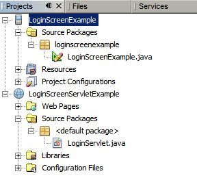
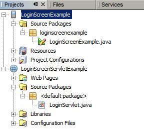

仿真器将显示闪屏组件，然后显示 "Login Screen"（登录屏幕），如下所示：

可视 Mobile 设计器 (Visual Mobile Designer, VMD) 是 NetBeans Mobility 中的图形界面，您可以在该界面中使用拖放式组件设计 Mobile 应用程序。通过 VMD，您可以使用 IDE 提供的组件或您自己设计的组件定义应用程序流和设计 GUI。VMD 包含很多标准用户界面 (User Interface, UI) 组件，您可以使用这些组件创建应用程序，如 "Lists"（列表）、"Alerts"（警报）、"Forms"（表单）、"Images"（图像）。它还包含一些定制组件，用于简化创建较复杂功能的过程，例如 "Wait Screen"（等待屏幕）、"Splash Screens"（闪屏）和 "Table Items"（表项）等。
"Login Screen"（登录屏幕）定制组件提供了一个非常有用的用户界面，其中包含一些标准元素，如 "Username"（用户名）字段、"Password"（口令）字段以及 "Login"（登录）按钮。使用该定制组件，可以创建登录界面以访问受保护的功能，如 GSM 银行。
如果您对 NetBeans Mobility 或 J2EE 不太熟悉，应先阅读 NetBeans Java ME MIDP 快速入门指南，然后再继续学习本教程。
目录

要学习本教程，您需要具备下列软件和资源。
| 软件或资源 | 要求的版本 |
|---|---|
| 带有 Java ME 的 NetBeans Beans | 版本 6.9 或更高版本 |
| Java Development Kit (JDK) | 版本 6 或版本 7 |
| GlassFish 或 Tomcat | 包含在 IDE 的 Java EE 和 All 安装中 |
在开始之前，您可能希望查看本教程的最终结果。
本示例介绍了如何在客户端应用程序中使用 "Login Screen"（登录屏幕）定制组件，以及如何使用验证的访问权限将其连接到服务器资源。除了 NetBeans Mobility 项目以外，我们还需要使用 NetBeans Web 项目。要完成本教程，您需要了解如何使用 NetBeans Web 项目，以及如何对 Web 应用服务器（如 GlassFish 或 Tomcat）进行本地或远程访问。
请执行下列步骤以安装 LoginScreenExample 应用程序：

alert1 组件以及 "Login Successful" 消息。
现在，您已看到运行中的 "Login Screen"（登录屏幕）组件，接下来让我们从头开始创建此应用程序。在本教程中，我们将仅使用 NetBeans Mobility 包创建 Java ME 客户端。如果您需要了解此应用程序的服务器端的详细信息，请查看 LoginScreenServletExample 项目源代码。要创建 Java ME 客户端应用程序，请执行以下操作：
LoginScreenExample。将Project Location（项目位置）更改为系统中的某个目录。我们将此目录称为 $PROJECTHOME。
注意：该项目文件夹中包含所有源代码和项目 meta 数据，如项目的 Ant 脚本。应用程序显示在可视 Mobile 设计器的 "Flow"（流）设计窗口中。
LoginScreenExample 项目，然后选择 "File"（文件）> "New File"（新建文件）（Ctrl-N 组合键）。在 "Categories"（类别）下，选择 "Java"。在 "File Types"（文件类型）下，选择 "Java Package"（Java 包）。单击 "Next"（下一步）。
loginscreenexample。单击 "Finish"（完成）。
loginscreenexample 包，然后选择 "File"（文件）> "New File"（新建文件）（Ctrl-N 组合键）。在 "Categories"（类别）下，选择 "MIDP"。在 "File Types"（文件类型）下，选择 "Visual MIDlet"。单击 "Next"（下一步）。
LoginScreenExample。单击 "Finish"（完成）。
 )。
)。在 "Flow"（流）视图中，单击 "Mobile Device"（移动设备）上的 "Started"（已启动）文本，然后将其拖至 splashScreen 组件上。采用相同的方法，按照下图所示连接各个组件。

private boolean login = false;。 private void login() throws IOException {
//URL
String url = "http://localhost:8084/LoginScreenExample/"
+ "?username=" + getLoginScreen().getUsername()
+ "&password=" + getLoginScreen().getPassword();
//Clean up alertSuccess
getAlertSuccess().setString("");
//Connect to the server
HttpConnection hc = (HttpConnection) Connector.open(url);
//Authentication
if (hc.getResponseCode() == HttpConnection.HTTP_OK) {
login = true;
}
//Closing time...
hc.close();
//Take action based on login value
if (login) {
getAlertSuccess().setString("Login Succesfull");
} else {
getAlertFailure().setString("Wrong Username or Password");
}
login = false;
}
该代码负责将包含用户名和口令信息的请求发送到服务器，并在成功完成登录过程时接收应答。您可以按 Ctrl+Shift+I 组合键以更正源代码导入。
在运行客户端应用程序之前，请确保服务器端应用程序已部署且正在运行。
要运行 Mobile 客户端应用程序，请选择 "Run"（运行）> "Run Main Project"（运行主项目）或按 F6 键以运行主项目。
NetBeans IDE 提供了 "Login Screen"（登录屏幕）组件以及可在 VMD 中使用的其他组件的 API Javadoc。要阅读 "Login Screen"（登录屏幕）组件的 Javadoc，请完成以下步骤：
 )，以便在浏览器中查看有关 LoginScreen 组件的详细信息。
)，以便在浏览器中查看有关 LoginScreen 组件的详细信息。